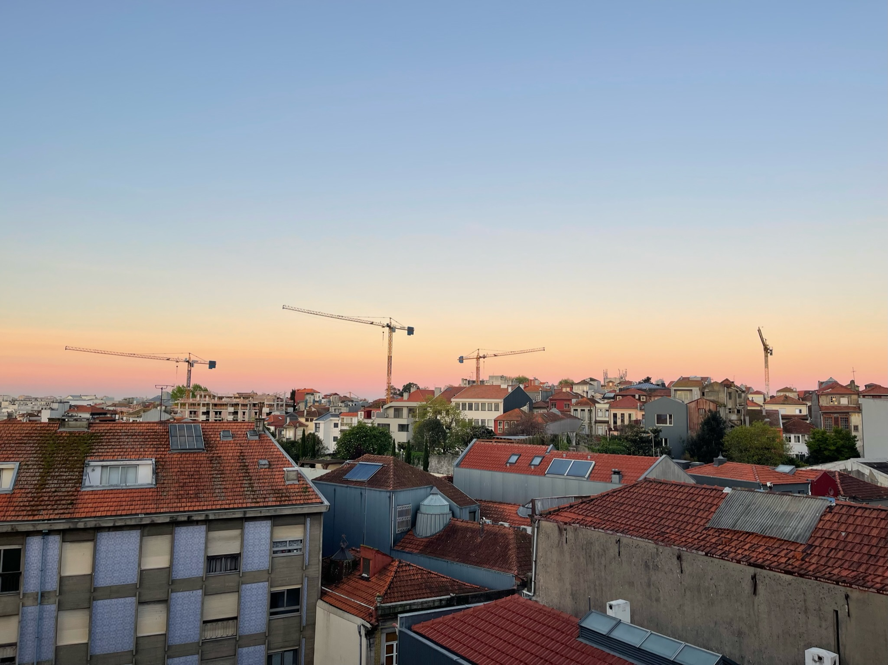
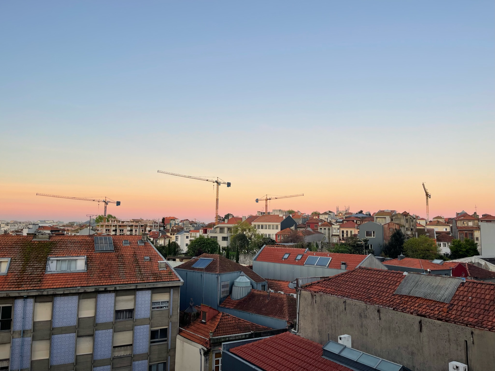

Tanvi Namjoshi
publications | teaching | hobbiesHi, I'm Tanvi! I'm a first-year Master's student at Princeton University advised by Lydia T. Liu. Previously, I majored in Computer Science at Cornell University, where I was advised by Jon Kleinberg.
At Cornell I was deeply involved with the CIS community as a Vice President of Women in Computing at Cornell (WICC). I also learned a lot as a Milstein Scholar working with the Digital Due Process Clinic.
I previously spent two summers working at Slack with the Bedrock (Kubernetes) and Datastores teams as a Software Engineering Intern.
publications
- Kiran Tomlinson, Tanvi Namjoshi, Johan Ugander, Jon Kleinberg. Replicating Electoral Success. Proceedings of the 39th AAAI Conference on Artificial Intelligence (AAAI), 2025. [pdf] [code] [poster] ★ Oral Presentation (4.6% of submissions)
- Jane Castleman*, Nimra Nadeem*, Tanvi Namjoshi*, Lydia T. Liu. Rethinking Math Benchmarks for LLMs using IRT. Innovation and Responsibility in AI-Supported Education (iRaise), 2025. [poster] ★ Spotlight Presentation
teaching
- COS 126, Computer Science An Interdisciplinary Approach @ Princeton — Graduate Assistant in Instruction (Fall 2024, Spring 2025)
- CS 4780, Intro to Machine Learning @ Cornell — Undergraduate Teaching Assistant (Spring 2024)
- CS 2110, Object-Oriented Programming and Data Structures @ Cornell — Undergraduate Teaching Assistant (Spring 2021 - Fall 2023)
hobbies
In my free time, I love sharing my culinary experiments on Instagram(@tanvicooks) and pursuing my passion for Kathak, an Indian classical dance form. At Cornell, I had the privilege of serving as co-president of Cornell Nazaqat, a Kathak-fusion dance team. I love to listen to podcasts, watch good tv, and have recently been getting back into reading. I also enjoy traveling, and have been fortunate to visit some amazing cities in the past few years.
Below is a collection of images from all of my hobbies!


 
